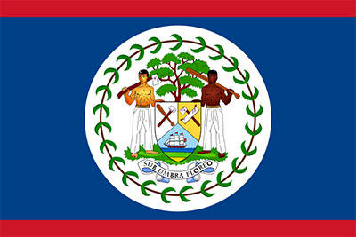

Símbolos Patrios

La bandera roja, blanca y azul de Belice es un símbolo de la
unidad de nuestra nación. Antes de la Independencia, el People's
United Party (PUP) propuso una bandera azul con el escudo de armas
en un círculo blanco. Debido a la estrecha asociación de la marca
con el PUP, la opinión pública estaba dividida en cuanto a su
idoneidad para actuar como un símbolo unificador.

El escudo del escudo de armas se divide en tres secciones por una
línea vertical y una V invertida. La sección base representa un
barco a toda vela en las olas del mar. Las dos secciones
superiores muestran herramientas de la industria de la madera en
Belice: una pala y un hacha de cuadrar en la sección derecha y una
sierra y un hacha golpeando en la parte izquierda.

The Orchid Negro (Encyclia Cochleatum) es la Flor Nacional de
Belice. Esta orquídea crece en los árboles en zonas húmedas, y las
flores casi todo el año. Su bulblike agrupado tallos varían en
tamaño de hasta seis pulgadas de largo y llevan dos o tres hojas.
Historia
Belice fue parte del área cultural maya, que se extendía desde el
sur de México hasta Guatemala y Honduras. La ocupación más temprana
del territorio corresponde a la mitad del segundo milenio a. C., la
cual tuvo cierto desarrollo en torno al siglo IX de nuestra era. El
centro político y cultural más importante de la región era el sitio
conocido en la actualidad como El Caracol, cuyas inscripciones se
encuentran en aristocrática variante del maya, llamado Ch’olti’an
Clásico por los epigrafistas. Al norte de las Montes Maya las
inscripciones de Lamanai se encuentran en yucateco desde el siglo
VII.
En el periodo Clásico, antes del siglo X, vivieron en el actual
territorio beliceño cerca de 400 000 personas y si bien hubo un
descenso de la población durante el Posclásico, las tierras bajas
mayas seguían ocupadas cuando arribaron los europeos en el XVI; para
entonces los principales habitantes eran los mopán, una rama de los
yucatecos.
Los conquistadores españoles exploraron la región a partir de 1519,
la incorporaron a la Corona de Castilla y el territorio pasó a ser
parte de la capitanía General de Guatemala, si bien optaron por no
colonizarla debido a la falta de recursos como el oro y la fuerte
defensa de la península de Yucatán por los mayas. En el siglo XVII,
marinos ingleses navegaron por la zona dedicándose a la piratería y
a la tala del palo de Campeche para la producción de tinte.
El tratado de Madrid de 1670 puso fin a los ataques piratas, con lo
que los ingleses se concentraron en cortar palo de Campeche. Con la
madera se producía un agente de fijación para los tintes de ropa que
era vital para la industria lanar europea. España otorgó licencia de
ocupar el área a los colonos británicos a condición de que cesaran
los actos de piratería.
En 1716 unos taladores británicos expulsados por los españoles de la
bahía de Campeche se instalaron en la región del río Belice. A lo
largo del siglo XVIII españoles y británicos intercambiaron ataques
cada vez que se declaraba la guerra entre las dos potencias. Un
ejemplo es la batalla del Cayo San Jorge, del 10 de septiembre de
1798. El aniversario de esta batalla ha sido declarado fiesta
nacional de Belice.
Los británicos esperaron hasta el año 1789 para nombrar el primer
superintendente del territorio de Belice. Anteriormente, el gobierno
británico no reconoció el asentamiento de Belice como una colonia,
por temor a provocar un ataque español ya que el territorio
pertenecía formalmente a España. La falta de implicación del
gobierno británico permitió a los colonos el establecimiento sus
propias leyes y formas de gobierno. Durante este tiempo unos pocos
colonos ricos ganaron el control de la legislatura local, conocida
como Public Meeting («Reunión Pública»), así como de la mayor parte
de las tierras y madera.
Extensión Territorial
Belice tiene un área de 22 800 km2 y una población de 387 879
habitantes (2017). Tiene la menor población y densidad de toda
América Central. El crecimiento poblacional anual era de 1,87% en
2015, el segundo más alto de la región y de los más altos en todo el
hemisferio oeste.